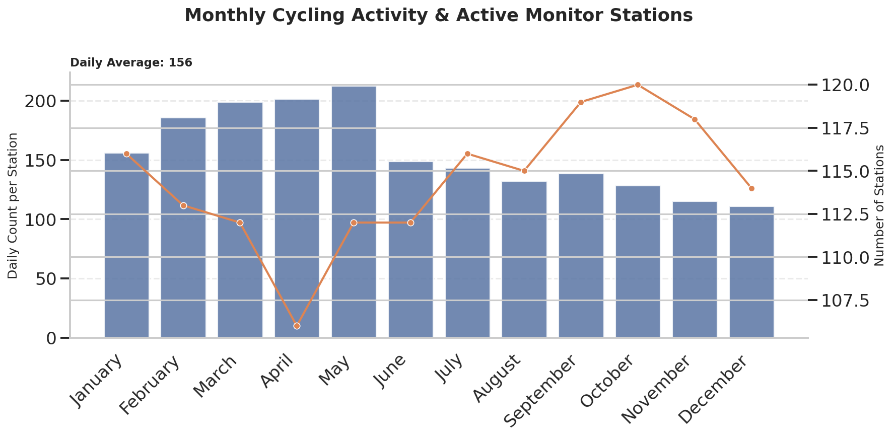
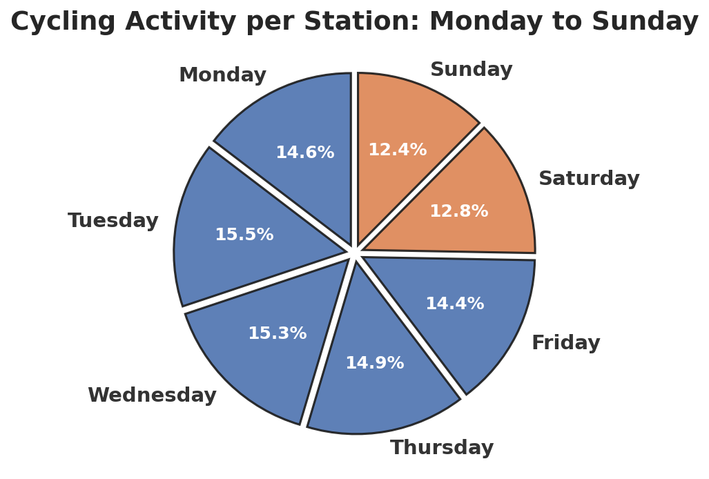
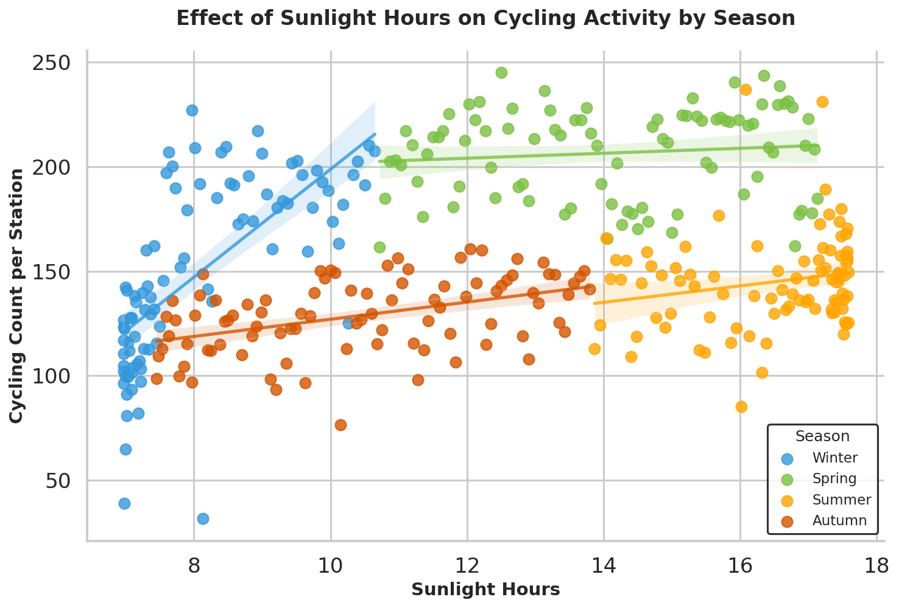

According to the Glasgow City Council, cycling activity has increased significantly in recent years, driven by improvements in infrastructure and enhanced safety measures.
This dashboard provides an overview of cycling activity in 2025, summarising key trends across months, days of the week, and environmental conditions.
It aims to highlight patterns in cyclist behavior and offer insights into how external factors could influence overall cycling usage.

This graph illustrates the monthly distribution of cycling activity per station, highlighting variations throughout the year.
Glasgow recorded an average of 156 daily cyclists per station across 127 monitored stations.
A station is considered active on days when there is at least one cyclist is recorded.
The graph also reveals clear seasonal patterns:
- Winter months experienced lower cycling activity overall, but a relatively higher number of active stations.
- Spring and early summer show increased cyclist counts per station, aligning with higher outdoor activity and favorable weather conditions.

The pie chart illustrates taht the cycling activity is relatively evenly distributed across all seven days.
While weekdays show slightly higher levels of cycling activity compared to weekends, the difference is not substantial, indicating consistent usage.
This could suggest that cycling in Glasgow is not only driven by commuting patterns but also remains significant during leisure periods.

Glasgow is well known for its rainy and windy climate.
This scatter plot explores the relationship between sunlight hours and cycling activity across the four seasons.
A clear positive correlation is observed: as sunlight hours increase, cycling activity also rises.
This trend is consistent across all seasons.Spring exhibits the highest and most stable levels of cycling activity, suggesting favorable and consistent conditions for cyclists.
Despite longer daylight hours in summer, the difference in cycling activity between spring and summer remains relatively small.
In contrast, winter shows greater variability and sensitivity to sunlight hours. Cycling activity fluctuates more significantly, and even small increases in daylight appear to have a noticeable impact. For Scottish cyclists in winter,
every hour of sunlight matters.
Source: Glasgow Open Data Hub & Cycling Open Data